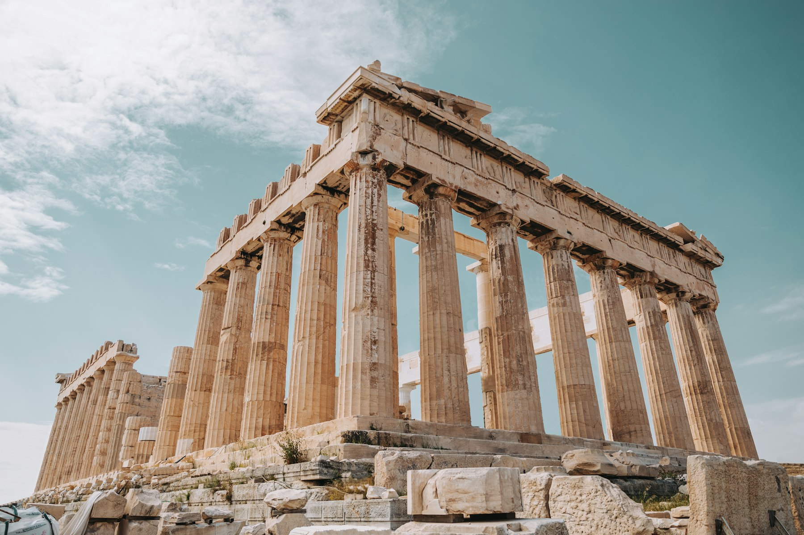
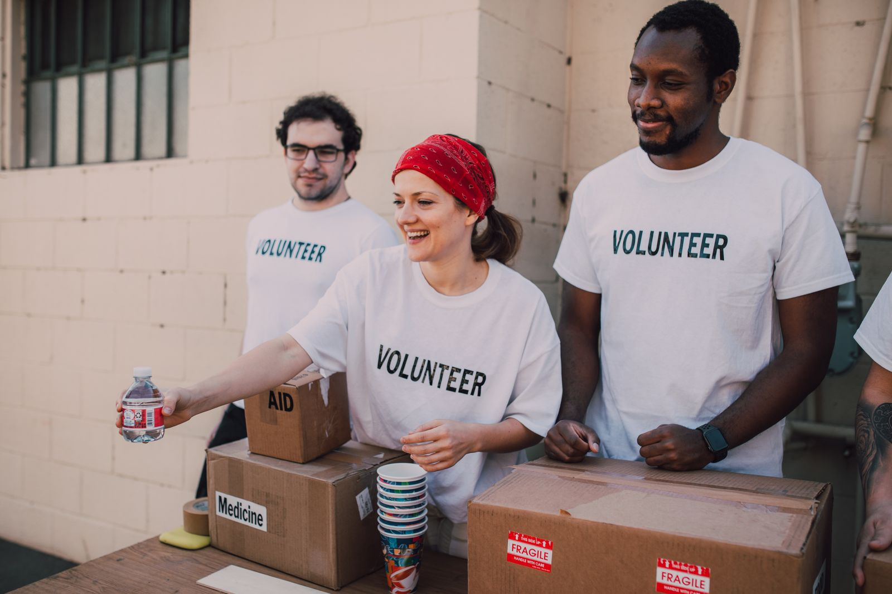

Jobseekers
Openings, CV paths, sector context.
Openings, CV paths, sector context.
Due diligence, signals, honest limits.
Match by focus & region — verify officially.
Weekly NGO digest for Greece civil society.

How people actually spend their weeks in Greek civil society — places, recurring events, and the rhythm behind the job ads (often anchored in Athens with field time elsewhere).

NGO life around major hubs (often Attica) is less “9–5 office” and more project cycles: donor deadlines, beneficiary appointments, rota coverage, and sudden coordination calls when a boat, a court date, or a ministry circular moves.
Shelter handovers, school runs for minors, clinic slots, case notes. HQ staff open email to overnight donor / ministry traffic.
Interpretation bookings, legal appointments, team huddles, purchase orders. Community centres peak with walk-ins.
Trainings, MEAL data entry, proposal writing, partner calls with Lesvos / Samos / Thessaloniki. Care shifts continue.
Rotas for caregivers and guardianship on-call. Advocacy events, fundraisers, and civil-society forums often land after hours.
Most careers bounce between two or three of these — rarely only a laptop café.
Shared desks in Exarchia, Kypseli, Metaxourgeio, Piraeus corridors — finance, MEAL, HR, proposal writing, Zoom with donors. Quiet intensity around grant close-outs.
ActionAid-style centres, legal clinics, language classes, material-aid distributions. High footfall, multilingual reception, CRM hygiene as real work.
ARSIS, HOME Project, METAdrasi-linked sites across Attica. Shift culture, safeguarding rules, early-morning caregiver blocks, educators after school hours.
Lesvos, Samos, Chios, mainland camps — MSF clinics, CCACs, volunteer centres. Athens HQ often remote-supports these sites; many careers start on an island then move to Attica.
Asylum Service queues, Ειρηνοδικείο filings for σωματεία, ΥΠΕΣ registry desks, TAMΕΥ / AMIF meetings. Advocacy and legal staff live part of the week here.
Conservatoire launches (EEA funds), university amphitheatres, municipal halls, outdoor solidarity events. Networking is not optional — it is how consortia form.
If you join an NGO in Greece, expect these gatherings far more often than black-tie galas.
Inter-agency meetings on referrals, guardianship, housing, health. Partners from PRAKSIS, GCR, municipalities, UNHCR sometimes in the same Zoom.
Guardianship seminars (METAdrasi-style), PSEA, first aid, interpretation ethics, data protection. New hires stack certificates in the first 90 days.
AMIF / ΕΣΠΑ / EEA inception workshops, site visits, timesheet clinics, final-report war rooms. MEAL and finance dominate the calendar here.
Fund launches, rights conferences, Bodossaki / EEA CSF events, thematic roundtables on Pact, housing, GBV. Good for visibility; exhausting if you are also on rota.
Press briefings, court solidarity for human-rights defenders, island needs alerts, campaigns against criminalisation of rescue / documentation work.
Supervision for psychologists, peer debriefs after critical incidents, rare offsites. Burnout talk is common; structured support varies wildly by employer.
Fixed-term, part-time, and “until project end” are normal. Stability exists — usually inside larger orgs with multi-year envelopes — but mobility between NGOs is part of the culture.
Greek + English open most HQ doors. Arabic, Farsi, French, Ukrainian, and other community languages unlock field and interpretation tracks. Interpretation itself is a profession, not a side skill.
Protection, trauma, and legal limbo sit next to Excel. Good teams budget supervision time; weaker ones lean on informal peer support. Ask about this in interviews.
Many “Athens jobs” still mean travel to islands, Evros, or regional offices. Commute + ferry + rota is a lifestyle choice as much as a CV line.
People stay for mission and team. They leave when unpaid overtime, unclear management, or serial short contracts stop being sustainable. Negotiate start dates, notice, and overtime norms early.
Composite orientation from Greece NGO Desk practice patterns (shelters, AMIF partners, community centres, civil-society funding calendars). Cross-check any employer’s handbook, rota, and safeguarding policy before you decide.
OSINT profile: synthesized from public sources and this desk’s registry — not exhaustive. Verify on official sites.
Browse by region and theme, or search — use More filters only when you need an exact scope label or score cut.
104 organisations with work across Greece (many HQs in Athens / Attica). Not a complete national census.
| Organisation | Sector | Region | Jobs | Possibility |
|---|
Search first, then narrow by where the role is based and thematic sector if needed.
Public vacancies indexed Oct 2026 — Greece-wide postings.
| Organisation | Title | Posted | Deadline | Location | Link |
|---|
Send CV + short letter when no matching vacancy is posted.
Relative score (0–100): hiring activity 40% · recency 20% · staff scale 20% · beneficiaries / programme dependents 20%.
Exact steps, conditions and criteria. “ΜΚΟ” is a common label, not a standalone legal type. Choose a legal form first, then tax / registry obligations, then optional sector registries.
Other vehicles exist (κοινωφελές ίδρυμα, επιτροπή εράνων, etc.) but σωματείο and ΑΜΚΕ cover most “NGO” startups.
Agree purpose, name, seat, and temporary administration.
Judge checks file completeness, mandatory statute clauses, and whether the purpose contradicts law / morals / public order (not “usefulness”).
Publish summary as ordered; serve διάταξη on Εισαγγελία Πρωτοδικών and competent Περιφέρεια.
Registration at competent Πρωτοδικείο completes recognition.
Obtain ΑΦΜ / start of operations at ΔΟΥ without delay; open bank account; bookkeeping setup.
Economic but non-commercial / non-profit-distributing purpose; choose ΚΑΔ activities.
Use official model statute (ΥΑ 5186/2024) via e-ΥΜΣ where eligible, or file completed statute at ΥΓΕΜΗ of the chamber.
Legal personality arises with ΓΕΜΗ filing/publication for ΑΜΚΕ of art. 784 ΑΚ (post-2011, ΓΕΜΗ replaced πρωτοδικείο commercial-partnership registers for this purpose).
Sources (verify before acting): Σωματείο procedure summary · ΓΕΜΗ model ΑΜΚΕ statute · ΓΕΜΗ circular on αστικές εταιρείες · ΥΠΕΣ Ο.Κοι.Π. guidance (PDF) · ΑΜΚΕ tax/ops overview
How a Greek NGO gets funded: what founders must have in place, the practical steps to raise money, and the main funding sources (EU, national, foundations, private).
Finish registration, ΑΦΜ, bank account, basic bookkeeping (myDATA). Without this, institutional money is almost impossible. See Create an NGO for formation steps.
Match theme (refugees, health, democracy, environment, youth…) to the right fund. ~80% of EU NGO money is managed by Member States (ΕΣΠΑ / national programmes); the rest via Commission portals.
New NGOs often join as partners under PRAKSIS / SolidarityNow / local municipalities / universities. Get a clear MoU: roles, budget share, reporting duties.
Sign grant agreement → track timesheets & invoices → interim / final reports → audit readiness. Missed reporting = clawbacks and blocked future calls.
Do not depend on one EU project. Mix: institutional grants + private foundations + individual donors + corporate CSR + service contracts where allowed by statute.
| Requirement | Why it matters | What to do if you miss it |
|---|---|---|
| ≥ 2–3 years of legal existence | ΥΠΕΣ Ειδικό Μητρώο / many institutional calls | Partner under a lead; use private foundation seed grants |
| Independence from state / parties | Ο.Κοι.Π. definition | Restructure board; remove public-body members |
| Audited or declared finances | Financial capacity checks (some calls also set max turnover) | Accountant + clean books from year one |
| Sector registry (e.g. migration) | Programme implementation eligibility | Complete registry file before bidding |
| Co-funding (own contribution) | Many EU grants are not 100% | Build a small unrestricted reserve from donations |
Sources: European Commission — funding for NGOs · ΕΣΠΑ · EEA Grants · ΥΠΕΣ Ο.Κοι.Π. (PDF) · Example call FAQs (eligibility patterns) · Migration NGO registry (Okeanis)
Greece NGO Desk mirrors parts of the civic ecosystem for several groups — not only job research.
Openings, spontaneous CV paths, sector context. Hooks: , , , , .
Due diligence, sector coverage, who does what. Hooks: registry filters, media signals, methodology notes on org profiles.
Trustworthy pointers and how to give safely — with legal review for tax/ΓΓΠΣ context. Start with and .
Orientation and signposting only — not a crisis hotline. Use registry filters; always follow official contacts and emergency numbers.
No impersonation of services. Registry coverage is partial; see methodology on org profiles.
Not legal advice. Orientation for job seekers and civil-society stakeholders.
Work contact emails are organisational recruiting channels — keep accurate, minimal, and reviewed. When the API is deployed, document your controller, purposes, and retention in your own privacy notice.
Organisations may request correction or removal by emailing the maintainer contact listed in the repository README. Steward edits are logged in the Phase B audit trail.
Media summaries are original with links to sources; trademarks belong to their owners. The desk aims for factual orientation — corrections welcome.